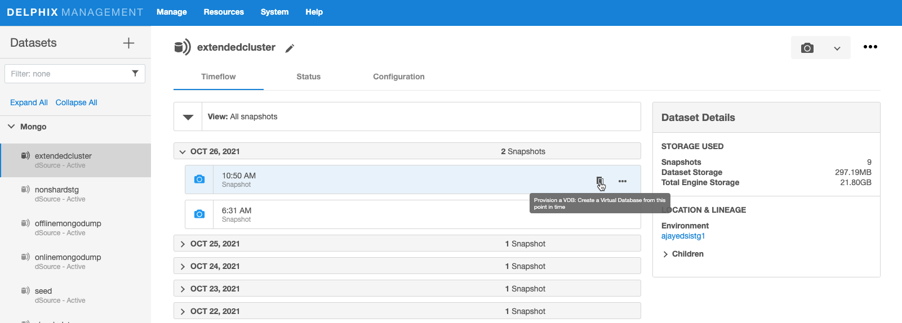
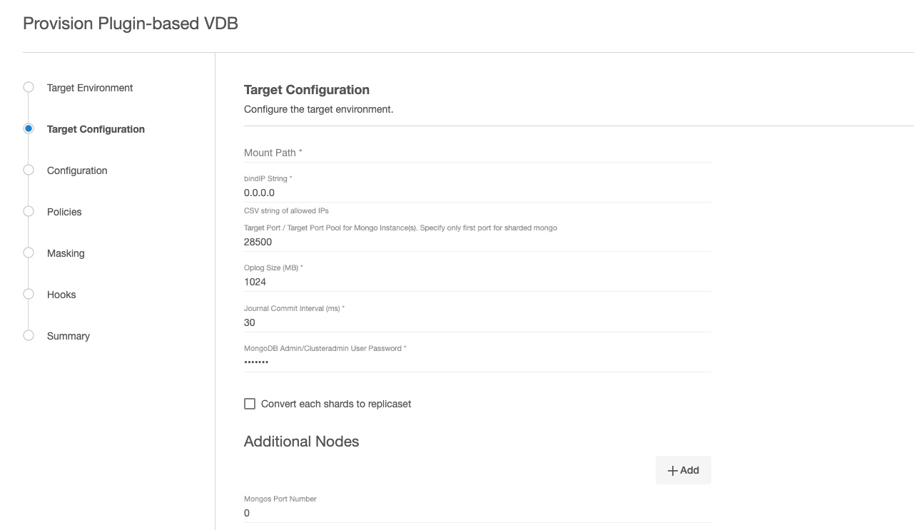

Provisioning
This topic describes the basic concepts involved with provisioning VDBs for Mongo.
A dSource is a virtualized representation of a physical or logical source database. You can create a virtual database (VDB) from a dSource snapshot. A VDB is an independent, writable copy of a dSource snapshot. You can also create VDBs from other VDB. Once you have provisioned a VDB to a target environment, you can also implement snapshot and retention policies for the VDB, which will determine how frequently Delphix Engine will take a database snapshot and how long the snapshots will be retained for recovery and provisioning purposes.
Snapshots accumulate over time. To view a snapshot:
- From the Datasets panel, click the group containing the dSource.
- Select dSource.
- Click the TimeFlow tab.
The TimeFlow appears as a list of dates, each of which expands to show snapshots from that date. Bring the cursor on desired snapshot of dSource, provision icon appears, click on provision icon.
Provide parameters to provision VDB, Follow the wizard and submit to provision VDB. Once you provisioned a VDB, you can also take snapshots of it. As with the dSource snapshots, you can find these when you select the VDB in the Datasets panel. You can then provision additional VDBs from these VDB snapshots.
Provisioning VDB
This topic describes how to provision a virtual database (VDB) from a mongo dSource.
Prerequisites
- Install delphix engine 6.0.7.x and above
- Install mongo binaries on Staging host
- Add Staging Environment
- Create dSource
- Install mongo binaries on Target host
- Add Target environment
Create VDB
Procedure:
- Login to the Delphix Management GUI.
- Click Manage.
- Select Datasets.
- Select a dSource.
- Select a snapshot from which you want to provision.
-
Click Provision VDB icon to open Provision VDB wizard.

-
Select a target environment from the left pane.
-
Select an Installation to use from the dropdown list of available mongo binaries on that environment.
- Select the Environment User.
-
Enter VDB parameters.

VDB Parameters
Parameter Description Mount Path Mount Path for VDB mongo instance datafiles bindIP String IP Binding - default 0.0.0.0 Target Port / Target Port Pool for Mongo Instance(s). Specify only first port for sharded mongo For non-sharded VDB’s, this is the port that will be used for mongo instances. For sharded VDB’s, this is the starting port. Delphix will keep incrementing port by 1 and use as many as needed based on configuration selected. Oplog Size Size of oplogs Journal commit Interval Journal commit Internal in ms MongoDB Admin/Clusteradmin User Password Update password of delphix user created during dSource creation Convert each shards to replicaset Select this to create VDB as replicaset Additional Nodes Click on Add button to select aditional nodes for creating replicaset VDB or distributing Shards on different hosts Mongos Port Port to be used for mongos router instance Enable SSL/TLS Enable SSL/ TLS SSL/TLS Parameters SSL/TLS Parameters (e.g. tlsMode, tlsCAFile, tlsPEMKeyFile, sslAllowConnectionsWithoutCertificates etc) Enable Authentication Enable Authentication User Auth Mode None, SCRAM, x509 keyfile_path KeyAuth keyfile name (Full Path) Cluster Auth Mode None, keyFile, x509, sendKeyFile, sendX509 Source is Encrypted Does source mongo instance use encryption ? Source Encryption Method KeyFile, KMIP Local Encryption Keyfile Full path of KeyFile if used for encryption KMIP Parameters KMIP Parameter details ( e.g. kmipClientCertificateFile, kmipPort, kmipServerCAFile, kmipServerName ) Enable LDAP Enable LDAP Authentication / Authorization LDAP Parameters LDAP Parameter details ( e.g. ldapBindMethod, ldapQueryPassword, ldapServers, ldapTimeoutMS ) Enable Auditlog Enable Auditlog Parameters Auditlog Parameters Auditlog Parameter details ( e.g. auditDestination, auditFilter ) Enable SetParams Enable SetParams SetParams Parameters SetParams Parameter details ( e.g. authenticationMechanisms, opensslCipherConfig ) Client Certificate for Mongos / Mongo Session on Primary Node Client Certificate for Mongos / Mongo Session on Primary Node Client CA Certificate for Mongos / Mongo Session on Primary Node Client CA Certificate for Mongos / Mongo Session on Primary Node Following Sections are in form of
Parameter NameandValueformat. Add as many parameters needed by clicking on+Addbutton.- SSL/TLS Parameters - KMIP Parameters - LDAP Parameters - Auditlog Parameters - SetParams ParametersNote:
- Any parameters specified for above section need to be compatible with
mongod/mongoscommand line parameters. - Please refer Mongo Documentation for appropriate names of parameters.
- Please do not specify “–” when adding any parameters.
- Sample Parameters are as below for SSL/TLS Parameters section
- tlsMode
- tlsCAFile
- tlsPEMKeyFile
- sslAllowConnectionsWithoutCertificates
- Any parameters specified for above section need to be compatible with
-
Select a Target Group for the VDB.
- Add a new group, if required.
- Select a Snapshot Policy for the VDB.
- Click Next.
- Specify any desired hook operations.
- Click Next.
- Review the Provisioning Configuration and Data Management information.
- Click Submit.
When provisioning starts, you can review the progress of the job in the Databases panel, or in the Job History panel of the Dashboard. When provisioning is complete, the VDB will be included in the group you designated and listed in the Databases panel. If you select the VDB in the Databases panel and click the Open icon, you can view its card, which contains information about the database and its Data Management settings.
Additional node is required only if you plan to use more than 1 host for VDB provisioning. This is applicable while creating VDB as replicaset OR while distributing Shards across multiple hosts. By default VDB’s are always created as single node replicaset which is completely virtual.
If Convert each shards to replicaset parameter is selected
- Delphix will convert non-sharded VDB to 3 node replicaset. Each additional instance ( 2 instances ) will incur storage as size of 1st instance. Mongo will initiate complete sync from existing member. This will impact storage as each new member will receive full copy of data from existing host. 2 Members will use twice the amount of storage. It is recommended to use single node replicaset ( if possible ) to save storage.
- Delphix will convert sharded VDB to 3 node replicaset for config server as well as each Shard. Each additional instance will incur storage as size of 1st instance. Mongo will initiate complete sync from existing member. This will impact storage as each new member will receive full copy of data from existing host. Storage usage will multiply based on number of shards. It is recommended to use single node replicaset ( if possible ) to save storage.